ТЕМА 1. Основи електроніки. Напівпровідникові прилади
1. Пасивні та активні компоненти.
2. Класифікація електронних приладів.
3. Класифікація схем та їх параметри.
4. Аналогові та цифрові сигнали.
5. Електропровідність.
6. Електронно-дірковий перехід.
7. Напівпровідникові прилади та їх стисла характеристика.
7.1 Напівпровідникові діоди.
7.2. Біполярні транзистори.
7.3. Польові транзистори.
8. Система позначень напівпровідникових приладів.
1. Пасивні та активні компоненти
Електроніка – галузь електротехніки, яка вивчає явища в напівпровідниках, газах, вакуумі та їх використання для одержання, передачі, обробки й зберігання інформації.
Велике різноманіття електронної апаратури виконується за допомогою пасивних та активних компонентів.
Пасивні елементи (конденсатори, резистори, котушки індуктивності та трансформатори) використовуються для розподілу електричної енергії в електричних ланцюгах, а також для забезпечення необхідного режиму роботи активних елементів.
Особливістю пасивних елементів є споживання та розсіювання потужності (Р).
Електричні вузли та блоки, побудовані виключно на пасивних компонентах, не підсилюють потужність. В таких колах потужність на виході (Рвих) завжди менше потужності на вході (Рвх ), а коефіцієнт передачі потужності
Кр = Рвих/ Рвх < 1.
Для побудови електронних вузлів, які забезпечують підсилювання потужності (Кр > 1), використовуються активні елементи – електронні прилади.
Це прилади, в яких рух носіїв зарядів в твердих тілах, вакуумі, рідинах, газах, плазмі та на кордоні цих середовищ використовується для практично безінерційного управління електричними параметрами та характеристиками. Активні прилади дозволяють здійснювати випрямлення, підсилення, генерацію, перетворення частот та інші активні процеси.
Активні елементи дозволяють реалізувати принцип реле, що забезпечує можливість підсилювати потужність, а також будувати генератори незатухаючих коливань. Реле, як елементи електричних схем, використовуються для комутацій, а також управління потужністю, яка надходить в кероване навантаження.
Цікаво, що термін реле (за французьким relais) використовувався в минулому для позначення процесу заміни коней на поштових станціях. Це, так би мовити, забезпечувало підсилювання потужності.
В електричних ланцюгах за допомогою реле малопотужний управляючий сигнал керує практично необмеженою потужністю, яка направляється від зовнішнього джерела живлення в кероване навантаження (рис.1)

Рис.1
2. Класифікація електронних приладів
Згідно з працюючим середовищем електронні прилади розподіляються на :
– вакуумні (високовакуумні і газорозрядні);
– напівпровідникові (твердотільні дискретні елементи, інтегральні схеми);
– рідинні.
В високовакуумних приладах використовуються особливості руху і керування електронами в колбах з вакуумом 10-6 мм. рт. стовпа і вище. Сюди відносяться такі електронні лампи: діоди, тетроди, тріоди, пентоди, комбіновані лампи, електронно-променеві прилади.
В газорозрядних приладах використовуються особливості руху і управління іонами в середовищах, заповнених інертними газами, з вакуумом 10-2 мм. рт. стовпа. До таких приладів відносять газотрони, високовольтні розрядники, тиратрони (мають третій керуючий електрод), різноманітні газорозрядні
індикаторні панелі (ГІП). Твердотільні електронні прилади використовують в дискретному і інтегральному виконанні. Напівпровідникові дискретні прилади: діоди, біполярні транзистори, тиристори, польові транзистори, прилади із зарядним зв’язком (з переносом заряду).
Основні етапи розвитку електронних приладів.
Перший етап охоплює період з 1904 року (винахід вакуумного діода) по 1948 рік (винахід транзистора). Цей етап характеризується розробкою та впровадженням високовакуумних та газорозрядних приладів. Такі прилади споживали надто багато потужності, мали невеликий термін служби і низьку надійність.
Другий етап – етап широкого використання НП, це етап транзисторизації.
Порівняно з електронними лампами, НП мають суттєві переваги:
– мала маса і малі розміри;
– відсутність витрат енергії на накал;
– більш висока надійність та термін служіння (десятки тисяч годин і більше);
– більша механічна міцність (стійкість до вібрацій, ударів та інших видів
механічних навантажень);
– більш високий ККД, тому що витрати енергії в самих приладах незначні (мінімальна потужність для живлення електронної лампи становить 0,1 Вт, а для транзистора вона може бути 1 мкВт, тобто в 100000 раз менше);
– можливість використання в мікроелектронній апаратурі;
– більш низька вартість.
Разом з тим напівпровідники мають деякі недоліки:
– параметри та характеристики окремих екземплярів даного типу приладів мають значний розкид;
– властивості та параметри приладів сильно залежать від температури;
– властивості та параметри деяких приладів з часом погіршуються (старіння) власні шуми інколи більші, ніж у електронних ламп;
– багато типів транзисторів нездатні працювати на високих частотах;
– вхідний опір багатьох транзисторів значно менший, ніж у електронних ламп;
– корисна потужність транзисторів та напівпровідників різко погіршується під дією іонізуючого випромінювання.
З 1958 року впроваджується планарна технологія, яка забезпечила бурхливий розвиток інтегральної схемотехніки.
Перехід від першого етапу до другого мав кількісний характер, а перехід від другого етапу до третього – якісний.
3. Класифікація схем та їх параметри
Схеми побудовані виключно на пасивних елементах називають електричними схемами, а схеми, які містять в собі пасивні та активні компоненти – електронними.
Такі схеми створюються шляхом послідовного та паралельного з’єднання простих (елементарних) каскадів, кожний із яких для передачі інформаційного сигналу має два входи та два виходи, тобто є чотириполюсником. Один із виводів чотириполюсника може бути загальним для входу та виходу.
Для оцінки спроможності схем передавати інформаційний сигнал використовують коефіцієнти передачі за напругою (Кu), струмом (Кi) та потужністю (Кр). Вони визначаються через відношення відповідно напруги, струму та потужності на виході та вході чотириполюсника. Для підсилювачів такі коефіцієнти називають коефіцієнтами підсилення за напругою, струмом та потужністю. При побудові складних схем важливим є також аналіз можливого впливу з’єднаних між собою каскадів.
Треба запам’ятати таке правило: при послідовному вмиканні чотириполюсників вхідний опір наступного каскаду повинен бути в 8-10 разів більшим за вхідний опір попереднього. За таких умов при з’єднанні каскадів режим роботи та коефіцієнти передачі схеми в них суттєво не зміняться.
4. Аналогові та цифрові сигнали
Сигналом являється будь-яка фізична зміна величина, значення якої або його зміна в часі містить в собі інформацію. Під сигналом ми будемо розуміти напругу та струм. Аналогові сигнали відображають інформацію про процеси, які з часом плавно змінюються. Це сигнали на виході радіоприймача, сигнали температурного датчика, гармонійний сигнал та інші. Амплітуда таких сигналів плавно змінюється від мінімального до максимального значення.
В імпульсних та цифрових схемах використовуються сигнали, які мають лише два значення: мінімальне (відсутність сигналу) та максимальне. Такі сигнали називають цифровими. Вони можуть приймати значення в межах двох дискретних областей і використовуються для зображення інформації типу ”ввімкнено – вимкнено” або ”да - ні”. В цифровій техніці мінімальний рівень позначають – рівень логічного нуля, а високий рівень - рівень логічної одиниці.
5. Електропровідність
Електрон являє собою елементарну електричну заряджену частинку з від’ємним зарядом e =1,602*10-19 Кл., масою me=9,109*10-31кг. Кількість електронів в атомі залежить від типу речовини і дорівнює його атомному номеру в періодичній системі елементів Д.І.Менделєєва.
Електрони в атомі взаємодіють з ядром і один з одним. Електрони, розташовані на зовнішніх орбітах, зв’язані з ядром слабкіше, ніж електрони, що знаходяться на внутрішніх, ближчих до ядра орбітах. Тому під дією сусідніх атомів або внаслідок інших причин зовнішні електрони можуть покинути свою орбіту, що призводить до зміни електричного стану атома.
Електрони, розташовані на зовнішніх орбітах, називаються валентними. Вони обумовлюють хімічну активність речовини, беруть участь у створенні хімічного зв’язку між атомами. Електрони, що звільнились від внутрішньоатомних зв’язків, називаються вільними. Вони можуть переміщуватись усередині речовини між атомами у довільних напрямках з різними швидкостями.
При наявності зовнішнього електричного поля вільні електрони почнуть прискорено рухатись до контакту, потенціал якого додатній. Під час руху вони будуть стикатися з атомами, з яких складається речовина, виділяючи енергію, яку ми сприймаємо як тепло. В результаті електрони дрейфують до додатних контактів з приблизно постійною швидкістю і невпорядкований рух електронів стає упорядкованим, направленим. Такий рух електронів створює електричний струм.
Чим більше вільних електронів має речовина, тим вища її електропровідність. Звідси і походить поділ твердих тіл за їх здатністю проводити електричний струм на провідники, напівпровідники та діелектрики. Сукупність енергетичних рівнів валентних електронів утворюють так звану валентну зону. Сукупність більш високих енергетичних рівнів вільних електронів утворює зону провідності, розташовану вище валентної і відокремленої від неї забороненою зоною. Шириною забороненої зони визначають електропровідність матеріалу (рис.2).
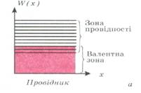
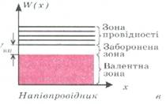
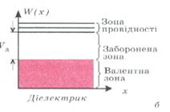
Рис. 2. Діаграма рівнів енергії
|
|
Внесення в напівпровідник домішки з п'ятьма
валентними електронами (арсен As - донорна
домішка) збільшує концентрацію вільних електронів. |
|
|
Внесення в напівпровідник домішки з трьома валентними електронами (індій In- акцепторна домішка) приводить до переходу електронів з валентної зони в домішкову. Напівпровідник називається напівпровідником з дірковою провідністю, або р-типу (від positive –позитивний). |


6. Електронно-дірковий перехід
Після приєднання кристалів почнеться дифузія дірок із p-області в n- область і дифузія електронів в протилежному напрямку (рис.7). Зустрічаючись, електрони і дірки рекомбінують, при цьому поблизу граничної площини утворюється два шари: зліва шар «оголених» від’ємних іонів, справа – шар «оголених» (не скомпенсованих) додатних іонів. Просторові заряди розміщені у тонкому шарі товщиною кілька мікрометрів безпосередньо біля межі між ділянками p- та n- типу. Цей подвійний шар
просторових зарядів і є власне p-n-переходом. Питомий опір подвійного шару набагато більший за питомий опір напівпровідника. Цей шар називають запірним.
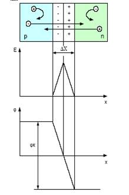
Рис. 3.
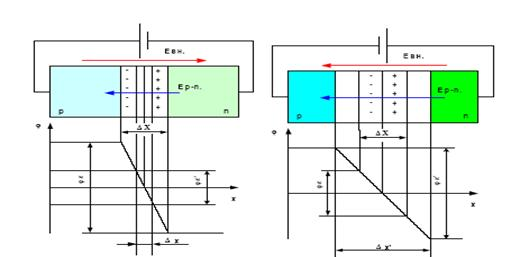
Рис. 4.
Контактна різниця потенціалів надає p-n- переходу властивість однобічної провідності, яка широко застосовується в сучасній техніці.
Якщо до p-n- переходу підключити джерело напруги U, то різниця потенціалів на границях контактного шару кристалів n- і p- типів зміниться.
Ввімкнення p-n- переходу в електричне коло, коли плюс джерела приєднати до області p, мінус до області n, називається прямим або пропускним (рис.4).
Напрям зовнішнього поля буде протилежним напряму електричного поля. Зовнішнє поле частково або повністю компенсує електричне поле p-n-переходу, що спричинює різке збільшення дифузного струму і p-n- перехід у цьому режимі вважається відкритим. Ввімкнення, при якому до області p- приєднаний мінус джерела, а до області n – плюс, називається зворотнім або замикальним. Зовнішнє поле різко зменшує дифузний струм, оскільки воно спрямоване проти струму, ширина запірного шару зростає, відповідно зростає й опір p-n- переходу.
7. Напівпровідникові прилади та їх стисла характеристика
7.1. Напівпровідникові діоди
Напівпровідниковим діодом називають напівпровідниковий прилад з одним p-n- переходом і
двома виводами.
Класифікують діоди за такими ознаками:
– основним напівпровідниковим матеріалом: кремнієві, германієві, арсенід-галієві;
– фізичною природою процесів: фотодіоди, світлодіоди та ін.;
– призначенням: випрямляючі, імпульсні, стабілітрони;
– технологією виготовлення: сплавні, дифузійні та ін.;
– типом переходу: точкові і площинні.
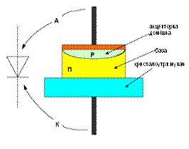
Рис. 5

Рис. 6. Вольт-амперна характеристика діода
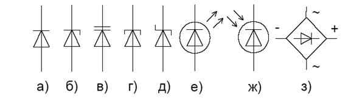
Рис. 7. Умовне графічне позначення діодів:
а) випрямляючі, високочастотні, імпульсні, діоди Гана;
б) стабілітрони; в) варикапи; г) тунельні діоди; д) діоди Шотки;
е) світлодіоди;
ж) фотодіоди; з) випрямляючі блоки
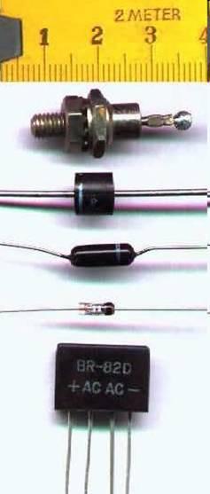
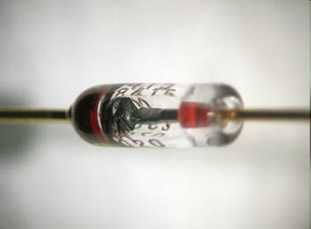
|
|
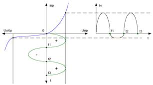
|
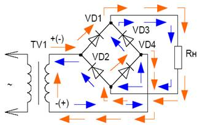
Рис. 9. Мостова схема випрямлення |
|
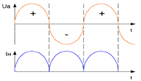 |


Стабілітрон – це напівпровідниковий діод, принцип роботи якого ґрунтується на тому, що зворотна напруга на p-n- переході в діапазоні електричного пробою майже не змінюється у разі значної зміни струму.
Рис. 10. Включення стабілітрона |
|
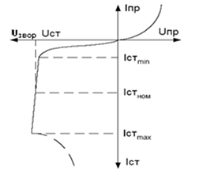
Рис. 11. ВАХ стабілітрона |

Фотодіоди - фотоелектричні прилади з внутрішнім фотоефектом, який полягає у тому, що під дією світлової енергії відбувається іонізація атомів основної речовини та домішки. Як наслідок - струм при зворотному вмиканні зростає.
Світлодіоди - перетворюють енергію електричного поля в нетеплове оптичне випромінювання. При протіканні струму через діод з арсеніду галію рекомбінація носіїв заряду супроводжується не тільки виділенням тепла, як, наприклад, у кремнієвого діода, а ще й квантів світла. У варикапа при змінах величини зворотної напруги змінюється ємність, завдяки чому він може застосовуватися, наприклад, для автоматичного налаштування контурів радіоприймача або телевізора на потрібну станцію чи канал.
7.2. Біполярні транзистори
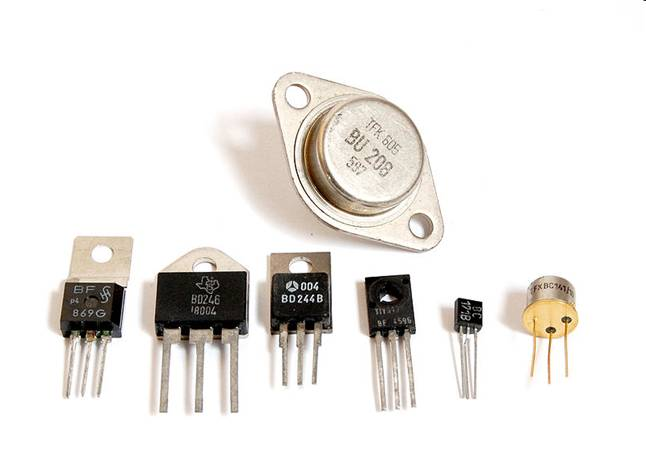
Транзистор (від англійських слів tгаnsfег - переносити і геsistог - опір) – електронний напівпровідниковий прилад, призначений для посилення, генерування і перетворення електричних коливань різних частот.
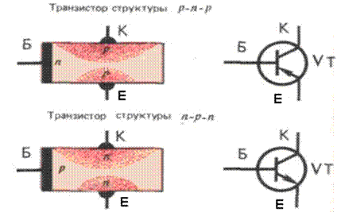
Рис. 12. Схемно-технічне зображення транзисторів різних структур
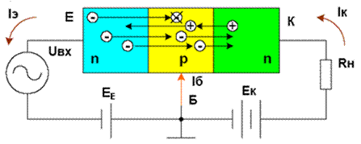
Рис. 13. Принцип дії біполярного транзистора
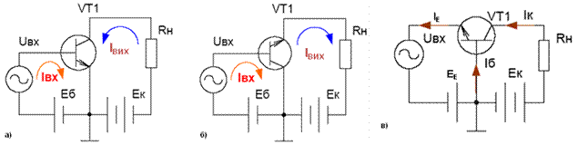
Рис. 14. Схеми включення транзисторів з: а) спільним емітером; б) спільним колектором; в) спільною базою
7.3. Польові (уніполярні) транзистори
Польовим транзистором називається напівпровідниковий прилад, у якого на відміну від біполярного транзистора, використовуються основні носії заряду однієї полярності. Рух основних носіїв заряду відбувається під дією повздовжнього електричного поля, а керування здійснюється поперечним електричним полем.
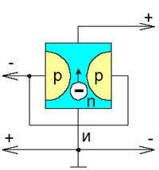
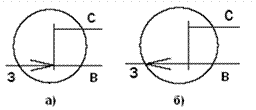
Рис. 15. Умовне графічне позначення польового транзистора: а) з каналом n–типу; б) з каналом р-типу
Польові транзистори з ізольованим затвором
Дані транзистори мають затвор у вигляді металевої плівки, яка ізольована від напівпровідника шаром діелектрика, в вигляді якого застосовується окис кремнію. Тому польові транзистори з ізольованим затвором називають МОН (метал - окис- напівпровідник) МДН (метал-діелектрик-напівпровідник) транзисторами. Польові транзистори аналогічно біполярним транзисторам можуть вмикатися за такими схемами: – зі спільним затвором (СЗ); – зі спільним витоком (СВ); – зі спільним током (СС).
8. Система позначень напівпровідникових приладів
Згідно з державними стандартами, всі напівпровідникові прилади, що випускаються промисловістю, позначаються літеро-цифровим кодом.
I – характеризує напівпровідниковий матеріал, з якого виготовлений прилад: германій – Г або 1; кремній – К або 2; арсенід галію – А або 3.
II – літера – позначає підклас приладу: транзистори біполярні –Т; транзистори польові –П; випрямні діоди –Д; діоди надвисокочастотні –А; стабілітрони –С; тиристори діодні –Н; тиристори тріодні –У.
III – цифри від 1 до 9 – позначає діапазон основних параметрів (потужність, частота та ін).
IV – двозначне число від 01 до 99 – це номер розробки.
V – літери алфавіту – характеризують технологічні особливості виготовлення напівпровідникового приладу.
Наприклад, КС211Д – К – кремнієвий, С – стабілітрон, 2– потужність на більше
0,3Вт, 11 – напруга стабілізації не менше 10 і не більше 99 В.